K562 Neither DNase unmatched - State 13:Ctcf (n=55)
K562 Neither DNase unmatched - State 13:Ctcf (n=55)
[
See group descriptions
]
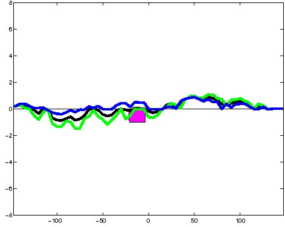
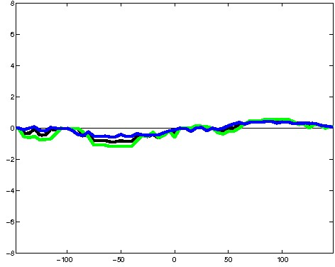
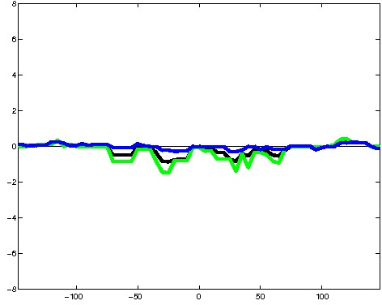
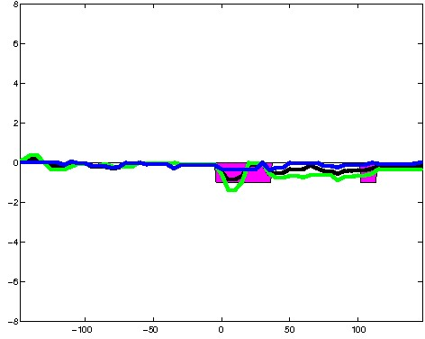
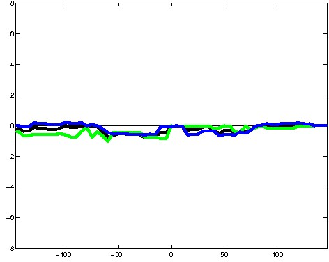
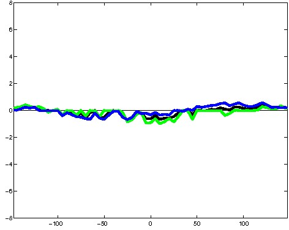
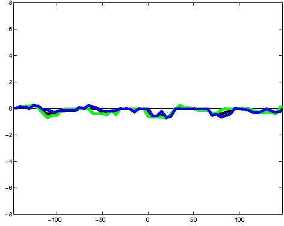
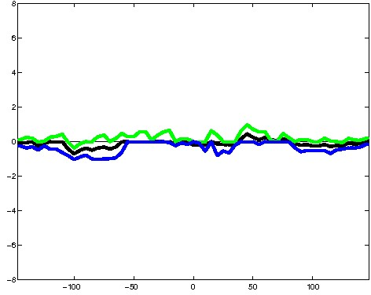
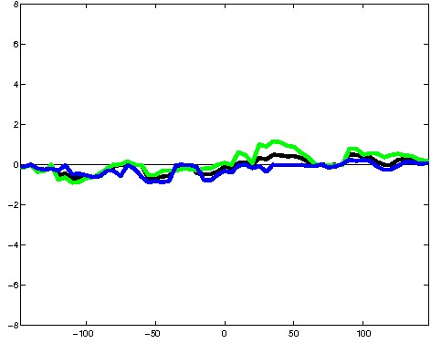
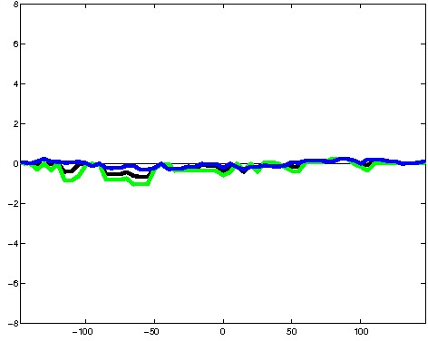
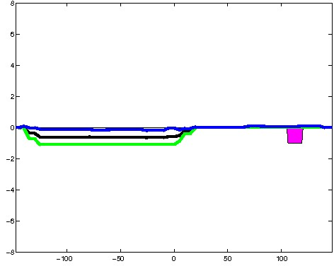
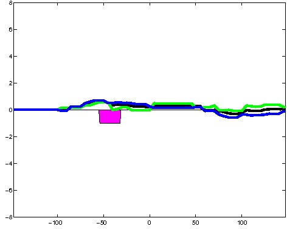
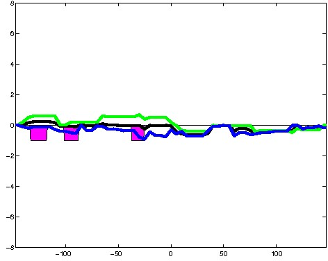
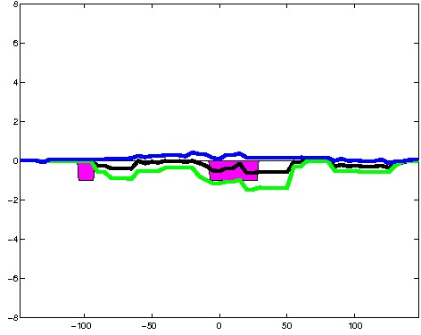
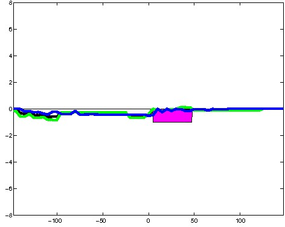
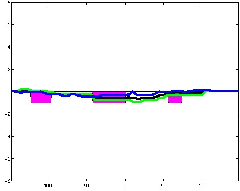
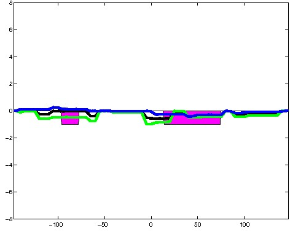
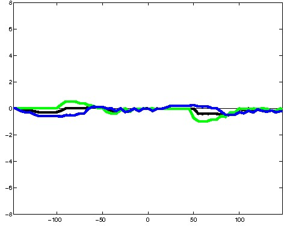
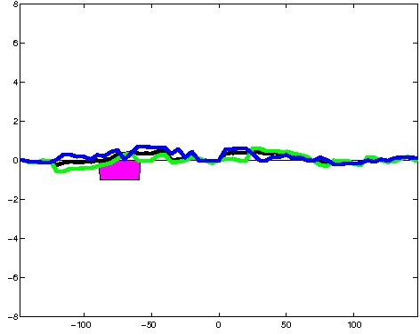
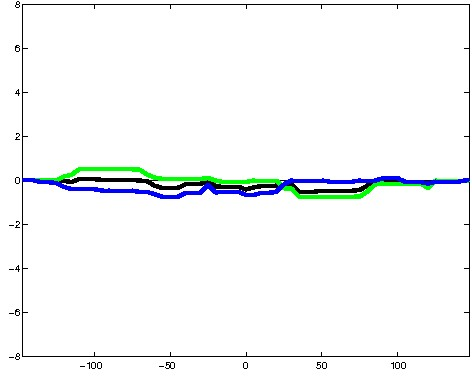
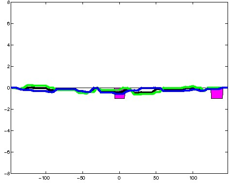
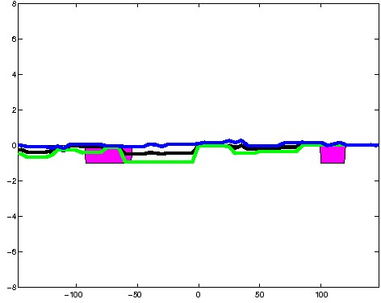
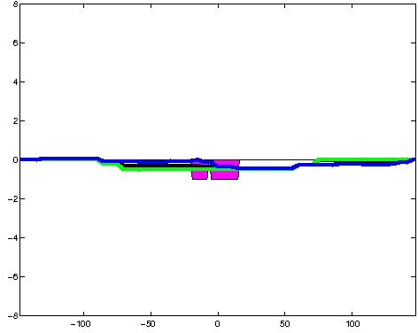
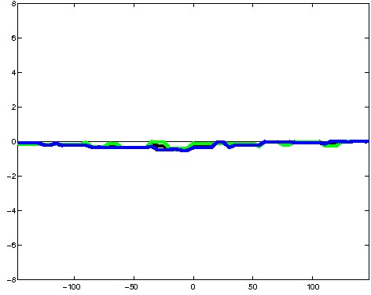
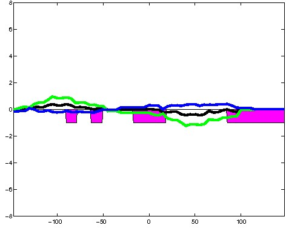
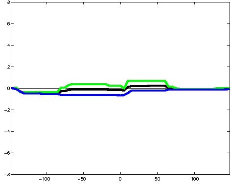
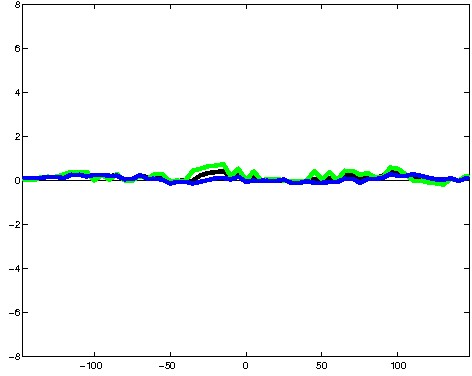
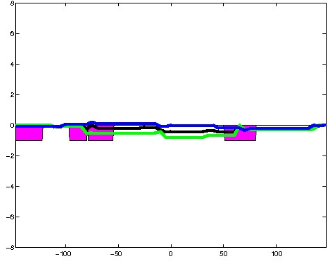
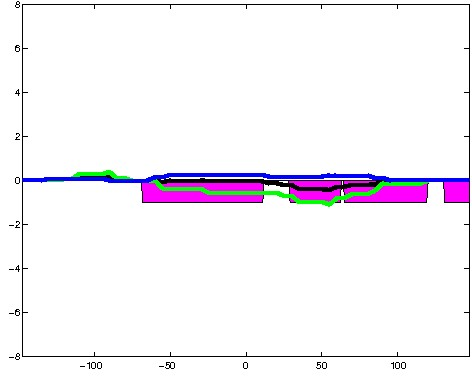
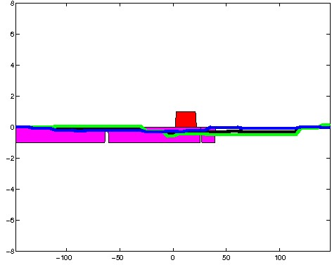
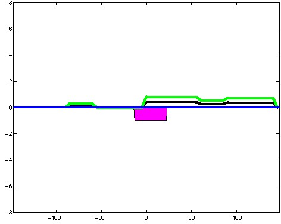
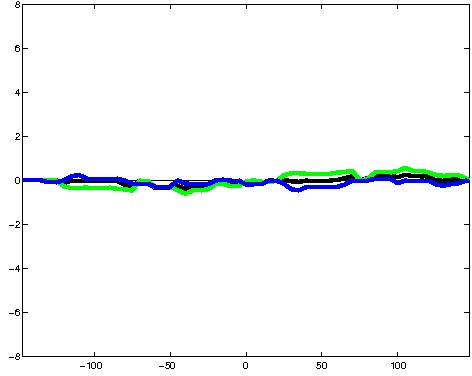
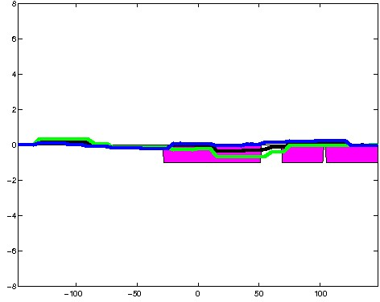
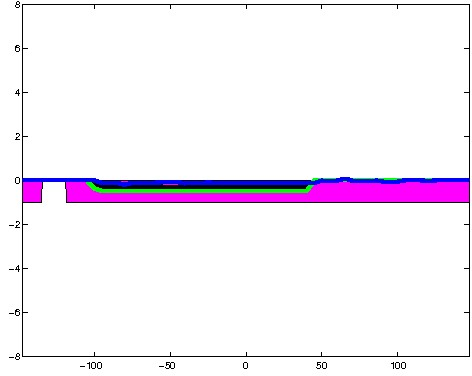
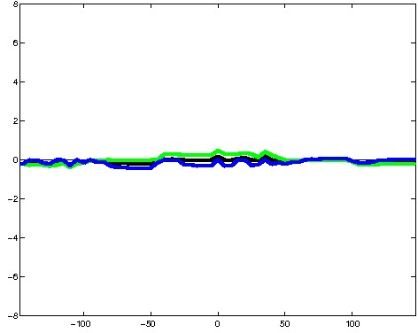
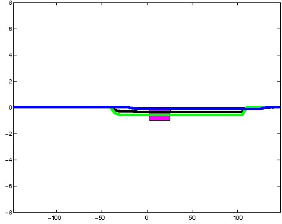
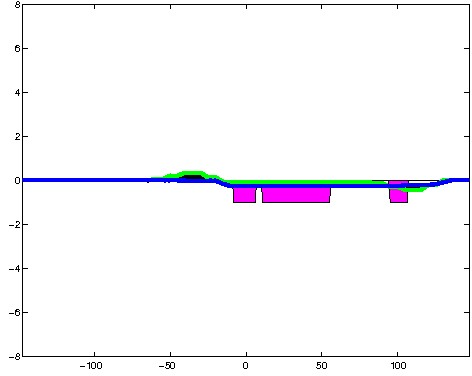
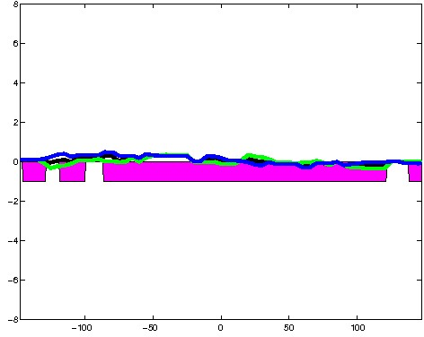
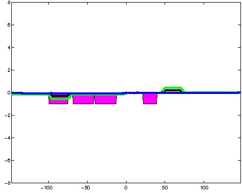
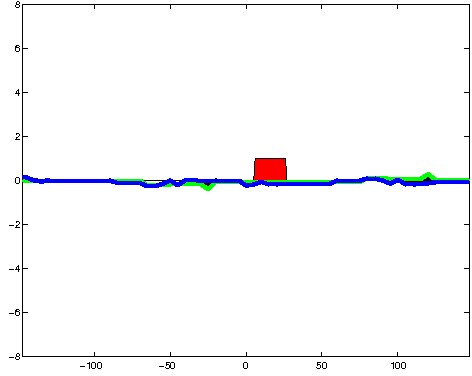
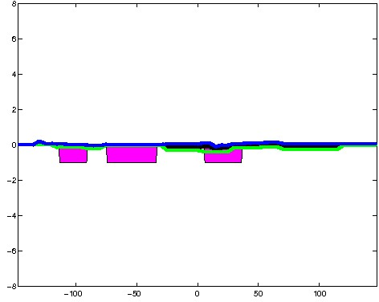
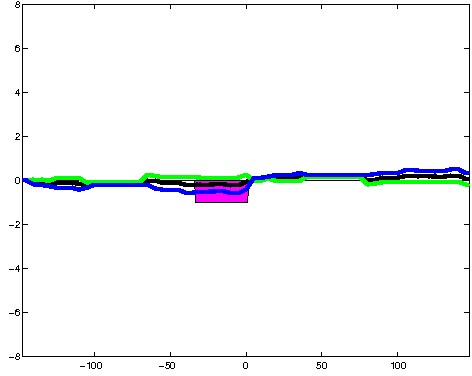
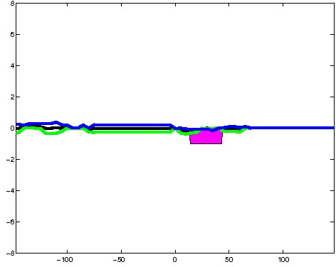
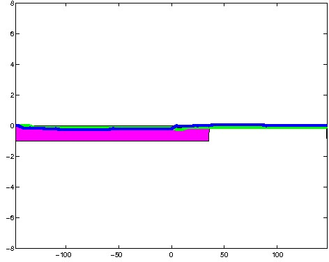
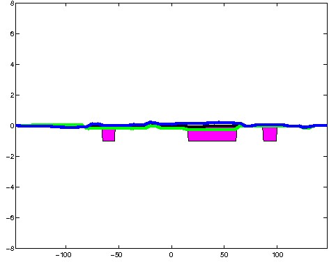
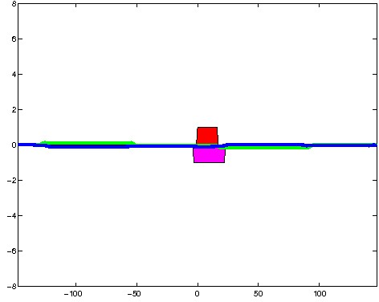
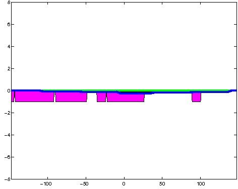
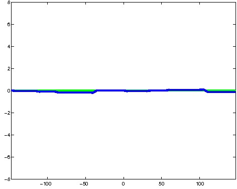
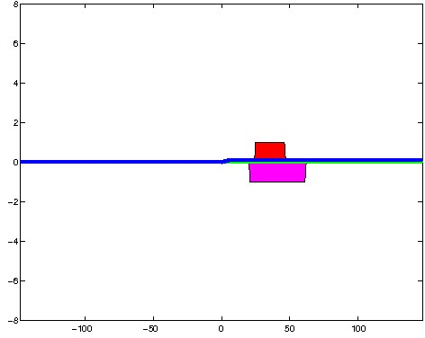
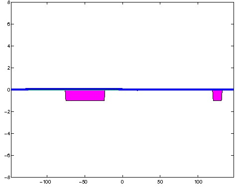
; picked in H1hesc (state 12:CtcfO, DNase); unmatched; chr18:30,294,509-30,294,803 (295bp)") 


; picked in H1hesc (state 13:Ctcf, DNase); unmatched; chr1:199,521,109-199,521,403 (295bp)") 


; picked in Huvec (state 12:CtcfO, DNase); unmatched; chr2:217,381,469-217,381,763 (295bp)") 


; picked in Huvec (state 12:CtcfO, DNase); unmatched; chr12:85,268,369-85,268,663 (295bp)") 


; picked in HepG2 (state 13:Ctcf, DNase); unmatched; chr7:117,992,949-117,993,243 (295bp)") 


